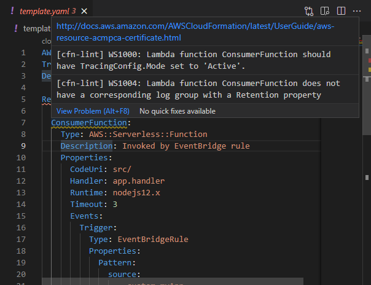

cfn-lint module¶
Installation¶
Serverless Rules for cfn-lint is available through the cfn-lint-serverless Python module in PyPi. You can use pip to install the module:
1 | |
Usage¶
You can now instruct cfn-lint to use Serverless Rules installed previous via --append-rules, or -a for short:
1 | |
You can also try with a Serverless Application Model (SAM) example provided in this repository. In the root folder of the repository, you can run:
1 | |
Sample outputs¶
If the template fulfills the requirements for all rules, cfn-lint will return an empty output. Otherwise, cfn-lint will output recommendations.
1 2 | |
1 2 3 4 5 6 7 8 9 10 | |
Ignoring rules¶
Serverless Rules is a set of recommended practices.
We recommend you to keep Error-level rules enabled. Non-error rules, for example Lambda Tracing, contain detailed scenarios on when it’s safe to ignore them.
When needed, you can ignore any specific rule that doesn’t match your environment.
Rules in cfn-lint can be disabled either through the --ignore-checks/-i command line argument, or with the .cfnlintrc configuration file in the current working directory. See the cfn-lint documentation for more information.
1 2 | |
1 2 3 | |
Other frameworks¶
You can use the cfn-lint module with all frameworks that synthesize to a CloudFormation template, such as the AWS Cloud Development Kit (CDK) and the Serverless Framework.
CDK¶
With the AWS CDK, you define your cloud resources using a familiar programming language such as TypeScript, Python, Java, C#/.Net, or Go. It will then use CloudFormation to provision those resources in your AWS environments.
Under the hood, CDK will generate a CloudFormation template before initiating a deployment on AWS. You can use the cdk synth command to generate that template manually. You can then run cfn-lint for inspecting that template.
1 2 | |
You can also try with a CDK example provided in this repository. In the root folder of the repository, you can run:
1 2 3 | |
Serverless Framework¶
The Serverless Framework is a specialized framework for Serverless applications that uses CloudFormation under the hood when deploying resources to AWS. You can manually create a package using the sls package command, which will generate the CloudFormation templates. With the --package option, you can specify in which folder it will store your package. In that folder, you can find the CloudFormation templates as JSON files starting with cloudformation-template-. You can then run cfn-lint for inspecting those templates.
1 2 | |
Continuous integration¶
You can use Serverless Rules and cfn-lint with your continuous integration tool to automatically check CloudFormation templates with rules from this project. For example, you can validate on pull requests, merge to your main branch, or before deploying to production.
If there are any issues with your template, cfn-lint will return a non-zero error code. You can find more information about cfn-lint return codes in its documentation.
AWS CodeBuild¶
Assuming that you are storing your template as template.yaml at the root of your repository, you can create a buildspec file such as this one:
1 2 3 4 5 6 7 8 9 10 11 12 13 14 | |
1 2 3 4 5 6 7 8 9 10 11 12 13 14 15 16 17 18 19 | |
If you want to run cfn-lint with other frameworks, see how you can generate CloudFormation templates in the Other frameworks section of this documentation.
GitHub Actions¶
Assuming that your template is stored as template.yaml at the root of your repository and that you are using main as your target branch for pull requests, you can create a GitHub actions workflow file such as this one:
1 2 3 4 5 6 7 8 9 10 11 12 13 14 15 16 17 18 19 20 21 22 23 24 25 | |
1 2 3 4 5 6 7 8 9 10 11 12 13 14 15 16 17 18 19 20 21 22 23 24 25 26 27 28 29 30 31 32 | |
If you want to run cfn-lint with other frameworks, see how you can generate CloudFormation templates in the Other frameworks section of this documentation.
GitLab¶
Assuming that your template is stored as template.yaml at the root of your repository, you can create a .gitlab-ci.yml file such as this one:
1 2 3 4 5 6 7 8 9 10 | |
1 2 3 4 5 6 7 8 9 10 11 12 13 14 | |
If you want to run cfn-lint with other frameworks, see how you can generate CloudFormation templates in the Other frameworks section of this documentation.
Existing stacks¶
If you want to check if a stack already deployed to AWS matches the recommended practices from Serverless Rules, you can download the CloudFormation template and run cfn-lint locally.
1 2 3 4 5 6 7 8 9 | |
IDE integration¶
Visual Studio Code¶

For Visual Studio Code, you can add the CloudFormation Linter extension, which will automatically run cfn-lint on your CloudFormation templates. In the extension's settings.json file, you can add additional rules like so:
1 2 3 4 5 6 7 | |